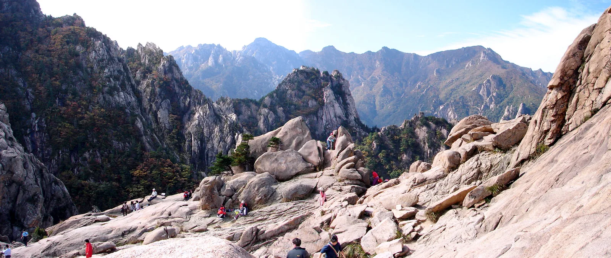

▲ 단풍철 주요 고속도로는 정체가 시작되는 시각이 대체로 정해져 있다
"새벽 5시에 출발했더니 여유롭게 도착했는데, 같은 코스를 아침 8시에 나선 옆 차선 사람들은 정오까지 고속도로 위에 있었다." 가을 단풍철 후기 게시판에 반복해서 올라오는 이야기다. 단풍철 정체는 운이 아니라 패턴이다. 언제 출발하느냐에 따라 같은 거리를 가는 데 걸리는 시간이 두 배 넘게 벌어진다. 한국도로공사가 공개하는 실시간 소통정보와 현장 사례를 근거로, 단풍철 주요 방면 고속도로가 실제로 언제부터 막히고 언제 출발해야 그 흐름을 피할 수 있는지 정리했다.
1. 왜 유독 이 시기에 몰리나
단풍철 정체는 세 가지가 겹쳐서 생깁니다. 첫째, 단풍 절정 시기 자체가 짧습니다. 산림청·국립수목원 예측 기준으로 설악산 고지대는 10월 하순, 내장산 저지대는 11월 초로 산마다 최적 시기가 2~3주 안에 몰려 있습니다. 둘째, 그 짧은 기간의 주말에 방문 수요가 집중됩니다. 평일보다 토요일 오전에 압도적으로 많은 차량이 한 방향으로 움직입니다. 셋째, 목적지가 산 입구라는 점입니다. 도심과 달리 진입로가 국도 한두 개로 좁아지는 구조라, 고속도로에서 흩어졌던 차량이 IC를 지나며 다시 한 곳으로 모입니다.
결과적으로 정체는 고속도로 본선보다 IC 부근과 진입 국도에서 더 심하게 나타납니다. 고속도로 정체 구간표만 보고 판단하면 실제 소요시간을 과소평가하기 쉽습니다.
2026년 시즌 전망으로는, 민간 기상업체 웨더아이가 내놓은 예측에 따르면 오대산·설악산은 10월 16~25일, 중부지방은 10월 31일~11월 5일, 지리산 등 남부지방은 11월 5~13일 사이에 절정을 맞을 것으로 보입니다. 다만 이는 민간 예측치로, 산림청·국립수목원의 공식 '산림단풍 예측지도'는 통상 9월 말~10월 초에 별도로 발표되므로 출발 직전에는 공식 자료로 한 번 더 확인하는 것이 정확합니다.

▲ 단풍철 주말 고속도로. 정체는 본선보다 IC를 벗어난 이후 구간에서 더 두드러진다
2. 실제 사례로 보는 시간대 차이 — 설악산
설악산 비선대·천불동 코스 방문자들 사이에서 통용되는 기준이 있습니다. 소공원 주차장에 오전 7시 이전 도착을 목표로 잡으라는 것입니다. 그 이유는 단순합니다. 단풍철 토요일에는 오전 7시가 지나면 소공원 주차장이 채워지기 시작하고, 오전 8시 무렵부터는 진입로 차량 정체가 눈에 띄게 심해집니다.
이 기준을 거꾸로 계산하면 수도권 기준 새벽 4시 30분~5시 출발이 나옵니다. 서울양양고속도로가 뚫리기 전보다는 사정이 나아졌지만, 단풍철 주말만큼은 예외입니다. 내장산 방면도 사정은 비슷합니다. 토요일 오전 8시를 기점으로 진입 도로 정체가 본격화된다는 것이 현지에서 통용되는 경험칙입니다.

▲ 설악산. 소공원 주차장은 단풍철 토요일 오전 7시 전후로 채워지는 경우가 많다 ⓒ Wikimedia Commons (CC BY-SA 3.0)
3. 방면별 권장 출발시각 정리
세 방면 모두 공통된 규칙이 있습니다. "목적지 진입로에 07시 이전 도착"을 목표로 역산하는 방식입니다. 지역에 따라 이동 거리가 다르므로 출발시각도 달라집니다.
| 방면 | 주요 경로 | 정체 시작(현지 체감) | 권장 출발(수도권 기준) |
|---|---|---|---|
| 설악산 | 서울양양고속도로 → 속초IC/양양IC | 토요일 오전 7~8시부터 소공원 주변 혼잡 | 새벽 4시 30분~5시 |
| 내장산 | 호남고속도로 → 정읍IC/입장IC | 토요일 오전 8시부터 진입 국도 정체 | 새벽 5시~5시 30분 |
| 지리산(성삼재·노고단 방면) | 순천완주고속도로 → 구례화엄사IC | 주말 오전 8~9시부터 861번 지방도 정체 | 새벽 5시~6시 |
※ 출발지·경유지에 따라 실제 소요시간은 달라집니다. 표는 "현지 진입로 정체가 본격화되기 전 도착"을 기준으로 한 참고치이며, 당일 실시간 정보로 반드시 재확인해야 합니다.
4. 실시간으로 확인하는 방법
출발 전날 밤과 당일 새벽, 두 번 확인하는 것이 좋습니다. 한국도로공사가 운영하는 로드플러스는 정체예상 교통지도와 주요 도시간 예상 소요시간, CCTV 화면을 무료로 제공합니다. 국토교통부 산하 국가교통정보센터(ITS)는 고속도로뿐 아니라 국도 구간의 실시간 소통 상황까지 확인할 수 있어 IC 이후 구간을 점검하는 데 유용합니다.
개발자나 데이터를 직접 다루고 싶다면 공공데이터포털에서 한국도로공사가 제공하는 실시간 고속도로 정체상황 오픈API도 확인할 수 있습니다. 공공데이터포털에서 확인

▲ 톨게이트 구간. 실시간 소통정보는 출발 전날과 당일 새벽 두 차례 확인하는 편이 안전하다 ⓒ CarPrism
5. IC를 나온 뒤가 진짜 승부처
고속도로 구간이 뚫려 있어도 방심할 수 없습니다. 내장산 방면은 호남고속도로 구간 자체는 비교적 짧고, 정읍IC나 입장IC를 나온 뒤 이어지는 국도·지방도 구간이 길게 이어집니다. 지리산 성삼재 방면도 구례화엄사IC 이후 861번 지방도가 굽이가 많아 내비게이션이 안내하는 예상 시간보다 실제로 더 걸리는 경우가 흔합니다.
이 구간들은 한국도로공사 관할이 아니라서 로드플러스에는 정보가 부족할 수 있습니다. 이럴 때는 국가교통정보센터(ITS)나 지자체가 운영하는 지역 교통정보, 또는 내비게이션 앱의 실시간 경로 재탐색 기능을 함께 활용하는 것이 낫습니다.

▲ 새벽 출발이라면 휴게소에서 한 번 쉬어가는 편이 안전운전에 도움이 된다 ⓒ CarPrism
6. 정리
체크포인트
- 설악산·내장산 방면 모두 토요일 오전 8시 전후로 진입로 정체가 시작되며, 목적지 주차장은 오전 7시 전에 채워지는 경우가 많다.
- 이를 피하려면 수도권 기준 새벽 4시 30분~6시 사이 출발이 필요하다. 거리가 멀수록 더 일찍 나서야 한다.
- 2025년 절정 시기 기준 설악산은 10월 하순, 내장산은 11월 초가 가장 붐볐다. 지리산 등 남부권은 이보다 조금 더 늦은 경향을 보인다.
- 고속도로 구간은 로드플러스, IC 이후 국도·지방도 구간은 국가교통정보센터(ITS)를 함께 확인하는 것이 정확하다.
- 당일 상황은 데이터로도 바뀔 수 있으므로, 표의 시각은 참고용으로만 삼고 전날 밤·당일 새벽 두 차례 실시간 정보를 재확인해야 한다.